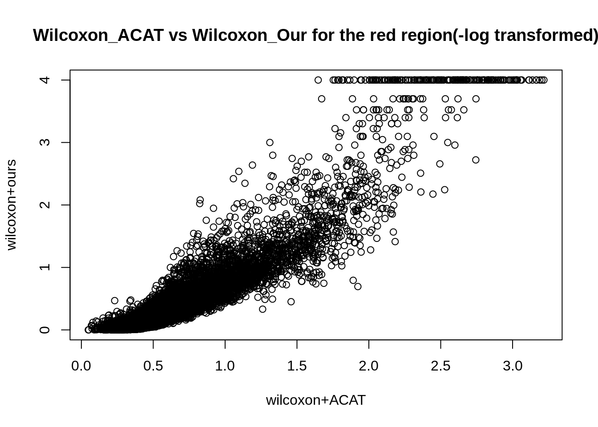
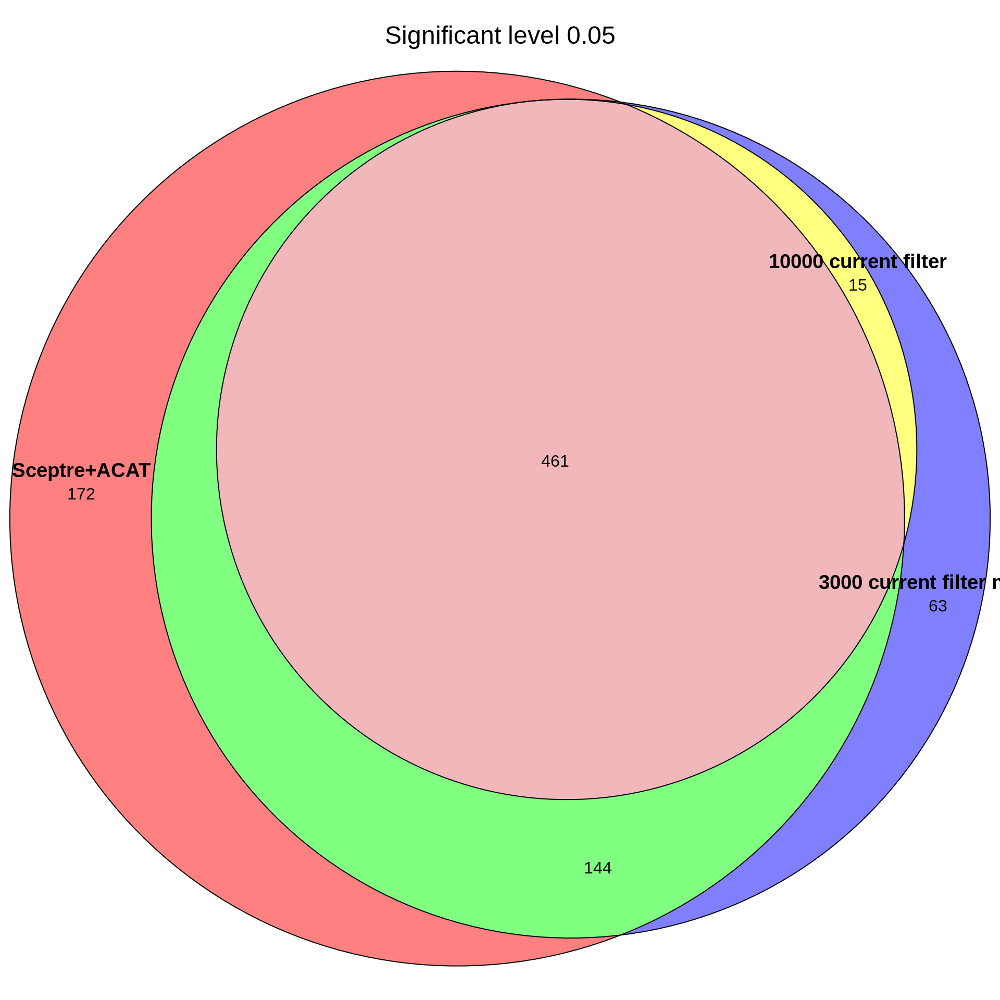

Research log June
jliucx
2025-6-1
Last updated: 2025-06-03
Checks: 6 1
Knit directory: Getting_started/
This reproducible R Markdown analysis was created with workflowr (version 1.7.1). The Checks tab describes the reproducibility checks that were applied when the results were created. The Past versions tab lists the development history.
Great! Since the R Markdown file has been committed to the Git repository, you know the exact version of the code that produced these results.
Great job! The global environment was empty. Objects defined in the global environment can affect the analysis in your R Markdown file in unknown ways. For reproduciblity it’s best to always run the code in an empty environment.
The command set.seed(20240712) was run prior to running the code in the R Markdown file. Setting a seed ensures that any results that rely on randomness, e.g. subsampling or permutations, are reproducible.
Great job! Recording the operating system, R version, and package versions is critical for reproducibility.
Nice! There were no cached chunks for this analysis, so you can be confident that you successfully produced the results during this run.
Using absolute paths to the files within your workflowr project makes it difficult for you and others to run your code on a different machine. Change the absolute path(s) below to the suggested relative path(s) to make your code more reproducible.
| absolute | relative |
|---|---|
| /project/xuanyao/jiaming/Getting_started | . |
| /project/xuanyao/jiaming/Getting_started/data/Morris/program_data_nature_cNMF/gene_module_index_matrix.rds | data/Morris/program_data_nature_cNMF/gene_module_index_matrix.rds |
| /project/xuanyao/jiaming/Getting_started/data/Morris_adjusted/program_data/grna_target_data_frame_omit.rds | data/Morris_adjusted/program_data/grna_target_data_frame_omit.rds |
| /project/xuanyao/jiaming/Getting_started/data/Morris_adjusted/program_data/discovery_pairs_cis.rds | data/Morris_adjusted/program_data/discovery_pairs_cis.rds |
| /project/xuanyao/jiaming/Getting_started/output/Morris/remove_cis_match_grna/4_cov_high_expressed_gene/cNMF_10000_wilcox_no_approx_sceptre_perturbation_gene_remove_strong_official_应该没啥问题了/resample_normal_test_statistics.csv | output/Morris/remove_cis_match_grna/4_cov_high_expressed_gene/cNMF_10000_wilcox_no_approx_sceptre_perturbation_gene_remove_strong_official_应该没啥问题了/resample_normal_test_statistics.csv |
| /project/xuanyao/jiaming/Getting_started/output/Morris/sceptre_all_pairs/author_threshold_updated/results_run_discovery_analysis.rds | output/Morris/sceptre_all_pairs/author_threshold_updated/results_run_discovery_analysis.rds |
| /project/xuanyao/jiaming/Getting_started/data/Morris_adjusted/program_data_nature_cNMF/perturbation_gene_strong_qc.rds | data/Morris_adjusted/program_data_nature_cNMF/perturbation_gene_strong_qc.rds |
| /project/xuanyao/jiaming/Getting_started/output/Morris/sceptre_all_pairs/author_threshold_updated/results_run_calibration_check.rds | output/Morris/sceptre_all_pairs/author_threshold_updated/results_run_calibration_check.rds |
| /project/xuanyao/jiaming/Getting_started/output/Morris/remove_cis_match_grna/4_cov_high_expressed_gene/cNMF_10000_wilcox_no_approx_sceptre_perturbation_gene_remove_with_bug/resample_normal_test_statistics.csv | output/Morris/remove_cis_match_grna/4_cov_high_expressed_gene/cNMF_10000_wilcox_no_approx_sceptre_perturbation_gene_remove_with_bug/resample_normal_test_statistics.csv |
| /project/xuanyao/jiaming/Getting_started/output/Morris/remove_cis_match_grna/4_cov/cNMF_3000_skew_t_approximation/resample_normal_test_statistics.csv | output/Morris/remove_cis_match_grna/4_cov/cNMF_3000_skew_t_approximation/resample_normal_test_statistics.csv |
| /project/xuanyao/jiaming/Getting_started/output/Morris/remove_cis_match_grna/4_cov_high_expressed_gene/cNMF_3000_wilcox_normal_approx_perturbation_gene_remove_strong_qc/resample_normal_test_statistics.csv | output/Morris/remove_cis_match_grna/4_cov_high_expressed_gene/cNMF_3000_wilcox_normal_approx_perturbation_gene_remove_strong_qc/resample_normal_test_statistics.csv |
| /project/xuanyao/jiaming/Getting_started/output/Morris/remove_cis_match_grna/4_cov_high_expressed_gene/cNMF_10000_wilcox_no_approx_sceptre_perturbation_gene_remove_/resample_normal_test_statistics.csv | output/Morris/remove_cis_match_grna/4_cov_high_expressed_gene/cNMF_10000_wilcox_no_approx_sceptre_perturbation_gene_remove_/resample_normal_test_statistics.csv |
| /project/xuanyao/jiaming/Getting_started/data/Morris_adjusted/program_data/gene_module_index_matrix.rds | data/Morris_adjusted/program_data/gene_module_index_matrix.rds |
| /project/xuanyao/jiaming/Getting_started/output/Morris/remove_cis_match_grna/4_cov_high_expressed_gene/HALLMARK_10000_wilcox_no_approx_perturbation_gene_remove_strong_official/resample_normal_test_statistics.csv | output/Morris/remove_cis_match_grna/4_cov_high_expressed_gene/HALLMARK_10000_wilcox_no_approx_perturbation_gene_remove_strong_official/resample_normal_test_statistics.csv |
| /project/xuanyao/jiaming/Getting_started/data/Morris_adjusted/program_data_nature_cNMF/perturbation_gene_strong_qc_complete_gene.rds | data/Morris_adjusted/program_data_nature_cNMF/perturbation_gene_strong_qc_complete_gene.rds |
| /project/xuanyao/jiaming/Getting_started/output/Morris/debug/HALLMARK_10000_wilcox_no_approx_perturbation_gene_remove_strong_official/genewise_p_combined_all.rds | output/Morris/debug/HALLMARK_10000_wilcox_no_approx_perturbation_gene_remove_strong_official/genewise_p_combined_all.rds |
| /project/xuanyao/jiaming/Getting_started/output/Morris/remove_cis_match_grna/4_cov/HALLMARK_10000_no_approximation/resample_normal_test_statistics.csv | output/Morris/remove_cis_match_grna/4_cov/HALLMARK_10000_no_approximation/resample_normal_test_statistics.csv |
| /project/xuanyao/jiaming/Getting_started/output/Morris/remove_cis_match_grna/4_cov_high_expressed_gene/HALLMARK_3000_wilcox_normal_approx_perturbation_gene_remove_strong_qc/resample_normal_test_statistics.csv | output/Morris/remove_cis_match_grna/4_cov_high_expressed_gene/HALLMARK_3000_wilcox_normal_approx_perturbation_gene_remove_strong_qc/resample_normal_test_statistics.csv |
| /project/xuanyao/jiaming/Getting_started/data/Morris/program_data_NMF_set_300_50/gene_module_index_matrix.rds | data/Morris/program_data_NMF_set_300_50/gene_module_index_matrix.rds |
| /project/xuanyao/jiaming/Getting_started/output/Morris/remove_cis_match_grna/4_cov_high_expressed_gene/our_NMF_10000_wilcox_no_approx_sceptre_perturbation_gene_remove_strong_qc/resample_normal_test_statistics.csv | output/Morris/remove_cis_match_grna/4_cov_high_expressed_gene/our_NMF_10000_wilcox_no_approx_sceptre_perturbation_gene_remove_strong_qc/resample_normal_test_statistics.csv |
| /project/xuanyao/jiaming/Getting_started/output/Morris/remove_cis_match_grna/4_cov_high_expressed_gene/our_NMF_3000_wilcox_normal_approx_sceptre_perturbation_gene_remove_strong_qc/resample_normal_test_statistics.csv | output/Morris/remove_cis_match_grna/4_cov_high_expressed_gene/our_NMF_3000_wilcox_normal_approx_sceptre_perturbation_gene_remove_strong_qc/resample_normal_test_statistics.csv |
| /project/xuanyao/jiaming/Getting_started/output/Morris/remove_cis_match_grna/4_cov_high_expressed_gene/NTC_complete_set/Strong_qc_FAKE_NON_OVERLAP_set_70genes_per_set_3000_normal_wilcox/resample_normal_test_statistics.csv | output/Morris/remove_cis_match_grna/4_cov_high_expressed_gene/NTC_complete_set/Strong_qc_FAKE_NON_OVERLAP_set_70genes_per_set_3000_normal_wilcox/resample_normal_test_statistics.csv |
| /project/xuanyao/jiaming/Getting_started/output/Morris/remove_cis_match_grna/4_cov_high_expressed_gene/NTC_complete_set/Strong_qc_FAKE_NON_OVERLAP_set_70genes_per_set_10000_no_wilcox/resample_normal_test_statistics.csv | output/Morris/remove_cis_match_grna/4_cov_high_expressed_gene/NTC_complete_set/Strong_qc_FAKE_NON_OVERLAP_set_70genes_per_set_10000_no_wilcox/resample_normal_test_statistics.csv |
| /project/xuanyao/jiaming/Getting_started/output/Morris/remove_cis_match_grna/4_cov_high_expressed_gene/NTC_complete_set/NONOVERLAP_FAKE_set_70genes_per_set_3000_normal_wilcox/resample_normal_test_statistics.csv | output/Morris/remove_cis_match_grna/4_cov_high_expressed_gene/NTC_complete_set/NONOVERLAP_FAKE_set_70genes_per_set_3000_normal_wilcox/resample_normal_test_statistics.csv |
| /project/xuanyao/jiaming/Getting_started/output/Morris/remove_cis_match_grna/4_cov_high_expressed_gene/NTC_complete_set/NONOVERLAP_FAKE_set_70genes_per_set_10000_wilcox/resample_normal_test_statistics.csv | output/Morris/remove_cis_match_grna/4_cov_high_expressed_gene/NTC_complete_set/NONOVERLAP_FAKE_set_70genes_per_set_10000_wilcox/resample_normal_test_statistics.csv |
Great! You are using Git for version control. Tracking code development and connecting the code version to the results is critical for reproducibility.
The results in this page were generated with repository version 3503115. See the Past versions tab to see a history of the changes made to the R Markdown and HTML files.
Note that you need to be careful to ensure that all relevant files for the analysis have been committed to Git prior to generating the results (you can use wflow_publish or wflow_git_commit). workflowr only checks the R Markdown file, but you know if there are other scripts or data files that it depends on. Below is the status of the Git repository when the results were generated:
Ignored files:
Ignored: .Rhistory
Ignored: .Rproj.user/
Ignored: analysis/run.sh
Ignored: analysis/run_R.sh
Untracked files:
Untracked: analysis/sceptre_singleton.R
Untracked: analysis/sceptre_singleton.Rmd
Untracked: analysis/sceptre_threshold.Rmd
Untracked: code/debug.Rmd
Untracked: code/discovery.pdf
Untracked: code/draft.Rmd
Untracked: code/find_gene_set.Rmd
Untracked: code/fit_skew_normal.cpp
Untracked: code/functions_optimized.R
Untracked: code/general_data_optimized.R
Untracked: code/minp.R
Untracked: code/nature_data_edit.Rmd
Untracked: code/negative_control.Rmd
Untracked: code/negative_control.pdf
Untracked: code/newest.R
Untracked: code/parallel/
Untracked: code/plots_generator.Rmd
Untracked: code/rcc_err/
Untracked: code/rcc_jobs/
Untracked: code/rcc_out/
Untracked: code/remove_cis.R
Untracked: code/remove_cis_optimize.R
Untracked: code/render_pdf.Rmd
Untracked: code/render_pdf_ntc.Rmd
Untracked: code/render_pdf_ntc.pdf
Untracked: code/run_R_caslake.sh
Untracked: code/sceptre/
Untracked: code/t_test.cpp
Untracked: code/utilizer/
Untracked: data/
Untracked: docs_destroyed/
Untracked: output/Morris/
Untracked: output/Xie/
Untracked: output/debug/
Untracked: output/nature/
Untracked: output/newest/
Untracked: temp/
Unstaged changes:
Deleted: analysis/reseach_log_May.Rmd
Modified: analysis/research_log.Rmd
Modified: analysis/research_log_May.Rmd
Modified: code/run_R.sh
Note that any generated files, e.g. HTML, png, CSS, etc., are not included in this status report because it is ok for generated content to have uncommitted changes.
These are the previous versions of the repository in which changes were made to the R Markdown (analysis/research_log_June.Rmd) and HTML (docs/research_log_June.html) files. If you’ve configured a remote Git repository (see ?wflow_git_remote), click on the hyperlinks in the table below to view the files as they were in that past version.
| File | Version | Author | Date | Message |
|---|---|---|---|---|
| Rmd | 3503115 | jliucx | 2025-06-03 | update June |
1 Morris cNMF
1.1 Strong perturbation-gene qc

1.2 NTC
p1<-gg_qqplot(as.vector(as.matrix(read.csv("/project/xuanyao/jiaming/Getting_started/output/Morris/remove_cis_match_grna/4_cov_high_expressed_gene/cNMF_10000_wilcox_no_approx_sceptre_perturbation_gene_remove_strong_official_应该没啥问题了/resample_normal_test_statistics.csv",row.names = 1)[189:198,])), title="current filter, 10000 no approximation")
p2<-gg_qqplot(as.vector(as.matrix(read.csv("/project/xuanyao/jiaming/Getting_started/output/Morris/remove_cis_match_grna/4_cov_high_expressed_gene/cNMF_3000_wilcox_normal_approx_perturbation_gene_remove_strong_qc/resample_normal_test_statistics.csv",row.names = 1)[189:198,])), title="current filter, 3000 normal approximation")
p3<-gg_qqplot(as.vector(as.matrix(read.csv("/project/xuanyao/jiaming/Getting_started/output/Morris/remove_cis_match_grna/4_cov_high_expressed_gene/cNMF_10000_wilcox_no_approx_sceptre_perturbation_gene_remove_with_bug/resample_normal_test_statistics.csv",row.names = 1)[189:198,])), title="No filter, 10000 no approximation")
ntc_pvals <- module_results_sceptre_NTC$acat_pval
p4<-gg_qqplot(ntc_pvals, title="NTC-ACAT")
grid.arrange(p3,p1,p2,p4,ncol=2)
2 Morris - HALLMARK
2.1 Strong perturbation - gene qc
selected_rows <- which(max_stat_long$p_value > 0.2 & module_results_sceptre$acat_pval < 0.05)
plot(-log10(module_results_t[selected_rows,]$acat_pval),
-log10(max_stat_long[selected_rows,]$p_value),xlab="wilcoxon+ACAT",ylab="wilcoxon+ours",main="Wilcoxon_ACAT vs Wilcoxon_Our for the red region(-log transformed)")
plot(-log10(module_results_t$acat_pval),
-log10(max_stat_long$p_value),xlab="wilcoxon+ACAT",ylab="wilcoxon+ours",main="Wilcoxon_ACAT vs Wilcoxon_Our for the red region(-log transformed)")

2.2 NTC
p1<-gg_qqplot(as.vector(as.matrix(read.csv("/project/xuanyao/jiaming/Getting_started/output/Morris/remove_cis_match_grna/4_cov_high_expressed_gene/cNMF_10000_wilcox_no_approx_sceptre_perturbation_gene_remove_strong_official_应该没啥问题了/resample_normal_test_statistics.csv",row.names = 1)[189:198,])), title="current filter, 10000 no approximation")
p2<-gg_qqplot(as.vector(as.matrix(read.csv("/project/xuanyao/jiaming/Getting_started/output/Morris/remove_cis_match_grna/4_cov_high_expressed_gene/cNMF_3000_wilcox_normal_approx_perturbation_gene_remove_strong_qc/resample_normal_test_statistics.csv",row.names = 1)[189:198,])), title="current filter, 3000 normal approximation")
p3<-gg_qqplot(as.vector(as.matrix(read.csv("/project/xuanyao/jiaming/Getting_started/output/Morris/remove_cis_match_grna/4_cov_high_expressed_gene/cNMF_10000_wilcox_no_approx_sceptre_perturbation_gene_remove_with_bug/resample_normal_test_statistics.csv",row.names = 1)[189:198,])), title="No filter, 10000 no approximation")
ntc_pvals <- module_results_sceptre_NTC$acat_pval
p4<-gg_qqplot(ntc_pvals, title="NTC-ACAT")
grid.arrange(p3,p1,p2,p4,ncol=2)
3 Morris our NMF
3.1 Strong perturbation-gene qc

3.2 NTC
p1<-gg_qqplot(as.vector(as.matrix(read.csv("/project/xuanyao/jiaming/Getting_started/output/Morris/remove_cis_match_grna/4_cov_high_expressed_gene/our_NMF_10000_wilcox_no_approx_sceptre_perturbation_gene_remove_strong_qc/resample_normal_test_statistics.csv",row.names = 1)[189:198,])), title="current filter, 10000 no approximation")
p2<-gg_qqplot(as.vector(as.matrix(read.csv("/project/xuanyao/jiaming/Getting_started/output/Morris/remove_cis_match_grna/4_cov_high_expressed_gene/our_NMF_3000_wilcox_normal_approx_sceptre_perturbation_gene_remove_strong_qc/resample_normal_test_statistics.csv",row.names = 1)[189:198,])), title="current filter, 3000 normal approximation")
ntc_pvals <- module_results_sceptre_NTC$acat_pval
p4<-gg_qqplot(ntc_pvals, title="NTC-ACAT")
grid.arrange(p1,p2,p4,ncol=3)
4 NTC - Random gene set
p5 <- gg_qqplot(as.vector(as.matrix(read.csv("/project/xuanyao/jiaming/Getting_started/output/Morris/remove_cis_match_grna/4_cov_high_expressed_gene/NTC_complete_set/Strong_qc_FAKE_NON_OVERLAP_set_70genes_per_set_3000_normal_wilcox/resample_normal_test_statistics.csv",row.names = 1))), title="filter, normal apprximation, 100 Non-overlapping fake sets, 70 genes per set")
p6 <- gg_qqplot(as.vector(as.matrix(read.csv("/project/xuanyao/jiaming/Getting_started/output/Morris/remove_cis_match_grna/4_cov_high_expressed_gene/NTC_complete_set/Strong_qc_FAKE_NON_OVERLAP_set_70genes_per_set_10000_no_wilcox/resample_normal_test_statistics.csv",row.names = 1))), title="filter, no apprximation, 100 Non-overlapping fake sets, 70 genes per set")
p3<- gg_qqplot(as.vector(as.matrix(read.csv("/project/xuanyao/jiaming/Getting_started/output/Morris/remove_cis_match_grna/4_cov_high_expressed_gene/NTC_complete_set/NONOVERLAP_FAKE_set_70genes_per_set_3000_normal_wilcox/resample_normal_test_statistics.csv",row.names = 1))), title="No filter, normal apprximation, 100 Non-overlapping fake sets, 70 genes per set")
p4<- gg_qqplot(as.vector(as.matrix(read.csv("/project/xuanyao/jiaming/Getting_started/output/Morris/remove_cis_match_grna/4_cov_high_expressed_gene/NTC_complete_set/NONOVERLAP_FAKE_set_70genes_per_set_10000_wilcox/resample_normal_test_statistics.csv",row.names = 1))), title="No filter, noapprximation, 100 Non-overlapping fake sets, 70 genes per set")
grid.arrange(p5,p6,p3,p4,ncol=2)
sessionInfo()R version 4.1.0 (2021-05-18)
Platform: x86_64-pc-linux-gnu (64-bit)
Running under: CentOS Linux 8
Matrix products: default
BLAS/LAPACK: /software/openblas-0.3.13-el8-x86_64/lib/libopenblas_skylakexp-r0.3.13.so
locale:
[1] LC_CTYPE=en_US.UTF-8 LC_NUMERIC=C
[3] LC_TIME=en_US.UTF-8 LC_COLLATE=en_US.UTF-8
[5] LC_MONETARY=en_US.UTF-8 LC_MESSAGES=en_US.UTF-8
[7] LC_PAPER=en_US.UTF-8 LC_NAME=C
[9] LC_ADDRESS=C LC_TELEPHONE=C
[11] LC_MEASUREMENT=en_US.UTF-8 LC_IDENTIFICATION=C
attached base packages:
[1] parallel stats graphics grDevices utils datasets methods
[8] base
other attached packages:
[1] speedglm_0.3-5 biglm_0.9-3 DBI_1.2.3
[4] MASS_7.3-60 ACAT_0.91 eulerr_7.0.2
[7] gridExtra_2.3 heavytailcombtest_1.0.0 sgt_2.0
[10] numDeriv_2016.8-1.1 optimx_2024-12.2 peakRAM_1.0.2
[13] BH_1.84.0-0 Matrix_1.6-3 sceptredata_0.99.0
[16] sceptre_0.10.0 presto_1.0.0 data.table_1.14.8
[19] Rcpp_1.0.12 tidyr_1.3.0 tibble_3.2.1
[22] readr_1.4.0 dplyr_1.1.4 ggplot2_3.5.1
[25] workflowr_1.7.1
loaded via a namespace (and not attached):
[1] httr_1.4.2 sass_0.4.9 jsonlite_1.8.7 bslib_0.7.0
[5] getPass_0.2-2 highr_0.11 yaml_2.2.1 pillar_1.9.0
[9] lattice_0.22-5 glue_1.6.2 rmutil_1.1.10 digest_0.6.33
[13] promises_1.2.0.1 polyclip_1.10-6 colorspace_2.1-0 htmltools_0.5.8.1
[17] httpuv_1.6.1 pkgconfig_2.0.3 invgamma_1.1 purrr_1.0.2
[21] mvtnorm_1.3-3 scales_1.3.0 processx_3.8.4 whisker_0.4.1
[25] later_1.2.0 pracma_2.4.4 git2r_0.32.0 farver_2.1.1
[29] generics_0.1.3 ellipsis_0.3.2 cachem_1.0.8 withr_2.5.2
[33] cli_3.6.1 magrittr_2.0.3 evaluate_0.23 ps_1.7.5
[37] fs_1.6.3 fansi_1.0.5 tools_4.1.0 hms_1.1.0
[41] lifecycle_1.0.4 stringr_1.5.1 munsell_0.5.0 callr_3.7.6
[45] compiler_4.1.0 jquerylib_0.1.4 rlang_1.1.2 grid_4.1.0
[49] nloptr_1.2.2.2 rstudioapi_0.15.0 labeling_0.4.3 rmarkdown_2.27
[53] gtable_0.3.0 R6_2.5.1 knitr_1.48 fastmap_1.1.1
[57] utf8_1.2.1 rprojroot_2.0.4 polylabelr_0.3.0 stringi_1.6.2
[61] vctrs_0.6.4 tidyselect_1.2.0 xfun_0.51